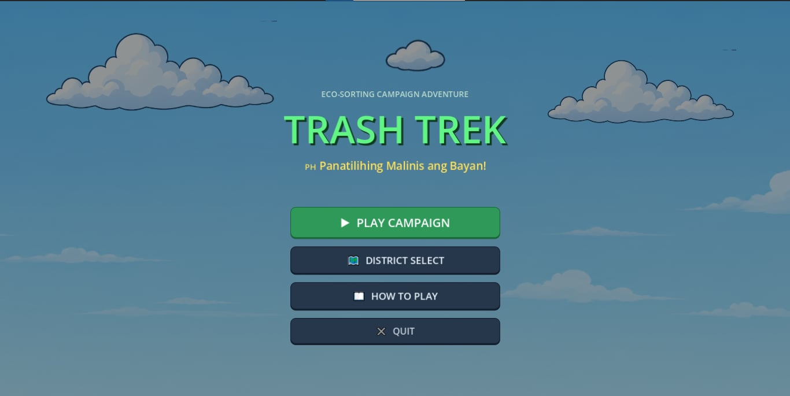
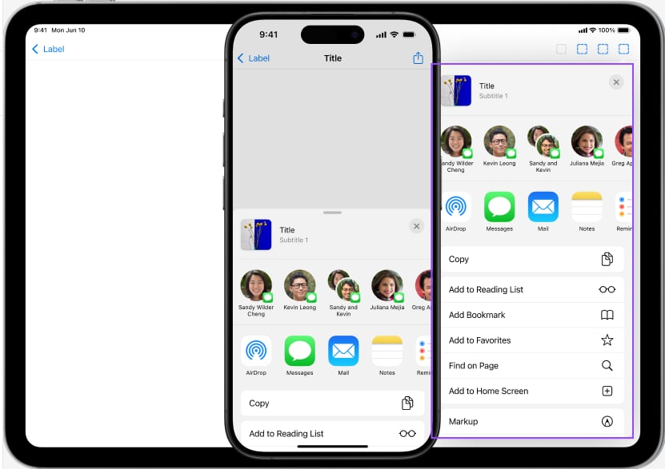
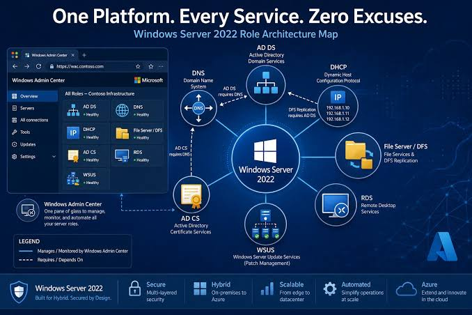

Game Development Project
A class project exploring interactive gameplay, basic mechanics, and how game ideas become playable experiences.
VIEW PROJECT DETAILS ↗I'm Nikko Monterola, a student learning to bring thoughtful ideas to life through technology, design, and experimentation.
EXPLOREI’m interested in how technology can turn everyday problems into better experiences.
This space documents what I’m learning, what I’m making, and the small discoveries that happen along the way. Every project is a chance to experiment, solve a problem, and improve my skills.
Always learning, always making ↗
A class project exploring interactive gameplay, basic mechanics, and how game ideas become playable experiences.
VIEW PROJECT DETAILS ↗
Web-based UI/UX design application used to design, prototype, and test mobile applications without writing code..
VIEW PROJECT DETAILS ↗
03 / LAB NOTES FROM THE PROCESSA practical lab exercise on configuring Active Directory Domain Services and DNS in a Windows Server environment.
VIEW PROJECT DETAILS ↗HTML, CSS, JavaScript
↗Logic, debugging, problem solving
↗Layout, typography, responsive pages
↗Research, testing, documentation
↗Have a question, an idea, or a project to share? I'd be happy to connect.
nikkomonterola37@gmail.com ↗